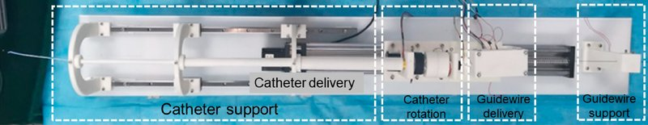

Academic bedside robots · tianjin_song2023
Tianjin MR-fluid
Tianjin master-slave interventional robot with MR-fluid passive haptic interface (catheter + guidewire simultaneously)

1 / 9


- Family
- Academic bedside robots (academic)
- Devices
- catheter and guidewire navigated simultaneously
- Degrees of freedom
- 3 (catheter axial + rotation, guidewire axial) (song2023 Sec. 3.2.1)
- Push
- Other drives
- Twist
- Rotating clamp
- Tested up to
- Phantom
- Sim-to-real
- None found — No simulation-trained controller found for this robot.
Testing
- Highest level
- Phantom
- What was tested
- bench: 1000 mm deliveries at 5-30 mm/s, 10 repeats per speed (Sec. 4.2, Fig. 15); phantom: surgeon at the master in an isolated room driving catheter and guidewire through a 1:1 in vitro model with circulating pump (Sec. 4.3, Figs. 17-18)
- Key numbers
- catheter axial delivery error mean 0.95 mm, max < 2.0 mm; guidewire mean 1 mm, max < 2.0 mm over 1000 mm at 5-30 mm/s (Sec. 4.2)
Mechanism
- Push (translation)
- friction-roller + clamp hybrid: catheter clamped by a solenoid gripper and pushed by a stepper-driven slide (clamp + stage); guidewire between an active and an electromagnet-pressed driven friction wheel on a stepper; a solenoid guidewire-support clamp holds the wire while the catheter advances (Sec. 3.2.1-3.2.2, Figs. 11-12)
- Twist (rotation)
- catheter only: the clamps of the catheter unit grip and a stepper motor rotates them (Sec. 3.2.2); guidewire not rotated
- Device range
- N.R.
- Target anatomy
- 1:1 in vitro vessel model with circulating pump (song2023_masterslave Sec. 4.3, Figs. 17-18)
Sensing and interface
- Force sensing
- catheter resistance: the gripper floats between four force sensors and touches them under load (Sec. 3.2.1); reflected to the MRF master
- Leader and haptics
- MRF passive haptic interface with a rigid catheter as handle: axial motion read by a Hall encoder through a removable friction wheel, rotation through a rotating tube with encoder; the force-feedback friction wheel is braked by MR fluid (Sec. 3.1)
- Imaging
- N.R.
- Sterility
- N.R.
Size
- Footprint (mm)
- N.R.
- Mass (kg)
- N.R.
Simulation
- Simulation model
- none found
- Sim-trained controller
- none found
Versions
- Lineage
- song2018_performance (Biomed Microdevices 2018, Kagawa-era catheter operating system with haptics) -> song2023_masterslave (Sensors 2023) -> song2025_passive (MBEC 2025, passive haptic interface, abstract not read)
Sources
- A Novel Master–Slave Interventional Surgery Robot with Force Feedback and Collaborative Operation · Sensors, 2023 · doi:10.3390/s23073584 [song2023_masterslave]
- Performance evaluation of a robot-assisted catheter operating system with haptic feedback · Biomedical Microdevices, 2018 · doi:10.1007/s10544-018-0294-4 [song2018_performance]
- Passive haptic interface for robot-assisted endovascular catheterization · Medical & Biological Engineering & Computing, 2025 · doi:10.1007/s11517-025-03374-2 [song2025_passive]
Notes
- Notes
- Mechanism details need the Sensors 2023 PDF (manual-download list). | 2026-11-08 X3: Sensors 2023 read in full; translation N.R. -> friction-roller + clamp hybrid; gallery already 8 (G2 used this paper's MDPI figures)
This record
- Read level
- full — full (song2023_masterslave, ); abstract (song2018_performance, song2025_passive)
- Picture
- song2023_masterslave Fig. 11(b) (developed slave equipment), Sensors 2023, image https://mdpi-res.com/sensors/sensors-23-03584/article_deploy/html/images/sensors-23-03584-g011.png ↗ — licence: CC BY 4.0; grade C
- Picture changes
- MDPI web image (1657x1196); cropped to panel (b); not upscaled; white dashed module boxes and labels on the robot left in place
- Found by
- academic: Search of academic bedside robots.
- Data
- JSON · YAML:
records/robots/tianjin_song2023.yaml - Correction
- Suggest a correction [repository not created yet]